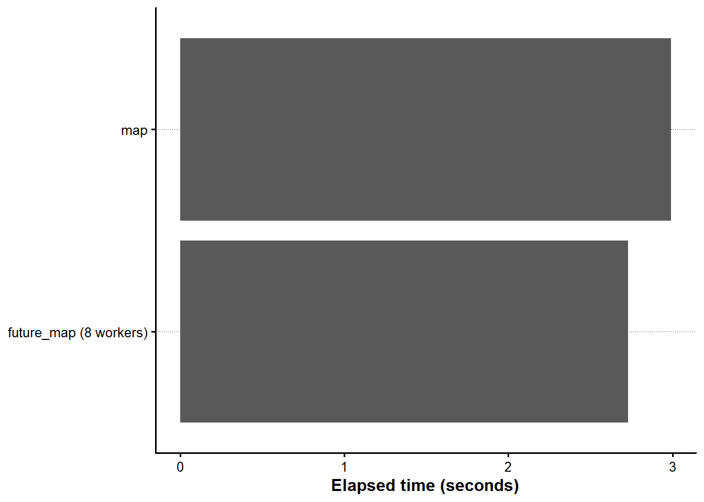

risk_free_rate <- 0.01
future_cash_flow <- 100
present_value <- future_cash_flow / (1 + risk_free_rate)
present_value
#> [1] 99.0099第I-1章 Rによるデータ分析の基礎
本章では、Rによるデータ分析に必要な基本操作を、Base Rからtidyverseへ段階的に学ぶ。前半では、オブジェクト、ベクトル、行列、リスト、データフレーム、関数、条件判定、記述統計および確率分布を扱う。後半では、dplyr、stringr、tidyr、purrr、ggplot2を用いて、データの読込み、整形、集計、反復処理、可視化を一つの流れとして組み立てる。さらに、nest()によるリスト列、futureとfurrrによる並列計算、dbplyrとArrowによるデータベース・大規模データ処理へ進む。
Base Rの項目構成は、Positが公開しているBase R Cheatsheetを参考にしている。本章のコードでは、反復処理に明示的なループを使わず、ベクトル化またはpurrr::map()系関数を用いる。また、パイプ演算子はすべて|>に統一する。
1.1 Rの基礎
Rの基本操作
オブジェクトと代入
Rでは、計算結果やデータをオブジェクトとして保存する。代入には<-を用いる。
オブジェクト名には、内容が分かる英単語を用いる。本書では複数の単語をアンダースコアで結ぶsnake_caseを基本とする。
四則演算と代表的な数学関数
2 + 3
#> [1] 5
10 - 4
#> [1] 6
6 * 7
#> [1] 42
100 / 4
#> [1] 25
2^5
#> [1] 32
sqrt(16)
#> [1] 4
log(exp(1))
#> [1] 1
abs(-3)
#> [1] 3
round(pi, digits = 3)
#> [1] 3.142
signif(pi, digits = 4)
#> [1] 3.142オブジェクトの型と構造
numeric_value <- 10.5
integer_value <- 10L
character_value <- "Finance"
logical_value <- TRUE
class(numeric_value)
#> [1] "numeric"
class(integer_value)
#> [1] "integer"
class(character_value)
#> [1] "character"
class(logical_value)
#> [1] "logical"
typeof(numeric_value)
#> [1] "double"
str(numeric_value)
#> num 10.5欠損値
欠損値はNAで表す。欠損値の有無はis.na()で確認する。
returns_with_na <- c(0.02, NA, -0.01, 0.03)
is.na(returns_with_na)
#> [1] FALSE TRUE FALSE FALSE
sum(is.na(returns_with_na))
#> [1] 1
mean(returns_with_na, na.rm = TRUE)
#> [1] 0.01333333ベクトル
ベクトルの作成
interest_rates <- c(0.01, 0.015, 0.02)
year_sequence <- 1:5
fine_grid <- seq(from = 0, to = 1, by = 0.25)
repeated_values <- rep(100, times = 5)
interest_rates
#> [1] 0.010 0.015 0.020
year_sequence
#> [1] 1 2 3 4 5
fine_grid
#> [1] 0.00 0.25 0.50 0.75 1.00
repeated_values
#> [1] 100 100 100 100 100ベクトルの要素
Rの添字は1から始まる。
interest_rates[1]
#> [1] 0.01
interest_rates[2:3]
#> [1] 0.015 0.020
interest_rates[-1]
#> [1] 0.015 0.020
interest_rates[interest_rates >= 0.015]
#> [1] 0.015 0.020名前付きベクトル
portfolio_weights <- c(stock = 0.6, bond = 0.3, cash = 0.1)
portfolio_weights
#> stock bond cash
#> 0.6 0.3 0.1
portfolio_weights["bond"]
#> bond
#> 0.3
sum(portfolio_weights)
#> [1] 1ベクトル化
Rでは、多くの計算をベクトル全体に一度に適用できる。
discount_rates <- seq(0.01, 0.05, by = 0.01)
cash_flow <- 100
present_values <- cash_flow / (1 + discount_rates)
tibble(discount_rates, present_values)
#> # A tibble: 5 × 2
#> discount_rates present_values
#> <dbl> <dbl>
#> 1 0.01 99.010
#> 2 0.02 98.039
#> 3 0.03 97.087
#> 4 0.04 96.154
#> 5 0.05 95.238行列、リスト、データフレーム
行列
return_matrix <- matrix(
c(0.01, 0.02, -0.01, 0.03, 0.00, 0.01),
nrow = 3,
ncol = 2,
byrow = TRUE
)
colnames(return_matrix) <- c("stock_a", "stock_b")
rownames(return_matrix) <- c("month_1", "month_2", "month_3")
return_matrix
#> stock_a stock_b
#> month_1 0.01 0.02
#> month_2 -0.01 0.03
#> month_3 0.00 0.01
return_matrix[, "stock_a"]
#> month_1 month_2 month_3
#> 0.01 -0.01 0.00
colMeans(return_matrix)
#> stock_a stock_b
#> 0.00 0.02リスト
リストには、型や長さの異なるオブジェクトをまとめて保存できる。
analysis_result <- list(
model_name = "simple return model",
coefficients = c(alpha = 0.001, beta = 1.05),
observations = 60L,
converged = TRUE
)
analysis_result$model_name
#> [1] "simple return model"
analysis_result$coefficients
#> alpha beta
#> 0.001 1.050
analysis_result[["observations"]]
#> [1] 60データフレーム
firm_data_base <- data.frame(
firm_id = 1:3,
firm_name = c("Firm A", "Firm B", "Firm C"),
roe = c(0.08, 0.12, 0.15)
)
firm_data_base
#> firm_id firm_name roe
#> 1 1 Firm A 0.08
#> 2 2 Firm B 0.12
#> 3 3 Firm C 0.15
str(firm_data_base)
#> 'data.frame': 3 obs. of 3 variables:
#> $ firm_id : int 1 2 3
#> $ firm_name: chr "Firm A" "Firm B" "Firm C"
#> $ roe : num 0.08 0.12 0.15tidyverseでは、データフレームを拡張したtibbleを用いる。
firm_data <- tibble(
firm_id = 1:3,
firm_name = c("Firm A", "Firm B", "Firm C"),
roe = c(0.08, 0.12, 0.15)
)
firm_data
#> # A tibble: 3 × 3
#> firm_id firm_name roe
#> <int> <chr> <dbl>
#> 1 1 Firm A 0.08
#> 2 2 Firm B 0.12
#> 3 3 Firm C 0.15少量のデータを行単位で記述する場合はtribble()が便利である。
project_data <- tribble(
~project, ~initial_cost, ~cash_flow,
"A", 100, 120,
"B", 150, 175,
"C", 200, 215
)
project_data
#> # A tibble: 3 × 3
#> project initial_cost cash_flow
#> <chr> <dbl> <dbl>
#> 1 A 100 120
#> 2 B 150 175
#> 3 C 200 215条件判定と独自関数
条件判定
npv <- 5.2
investment_decision <- if (npv >= 0) {
"投資を実行する"
} else {
"投資を見送る"
}
investment_decision
#> [1] "投資を実行する"ベクトルに対する複数の条件分岐にはcase_when()を用いる。
credit_scores <- tibble(score = c(85, 72, 58, 91))
credit_scores |>
mutate(
rating = case_when(
score >= 80 ~ "A",
score >= 65 ~ "B",
TRUE ~ "C"
)
)
#> # A tibble: 4 × 2
#> score rating
#> <dbl> <chr>
#> 1 85 A
#> 2 72 B
#> 3 58 C
#> 4 91 A独自関数
calculate_present_value <- function(cash_flow, discount_rate, years = 1) {
cash_flow / (1 + discount_rate)^years
}
calculate_present_value(cash_flow = 100, discount_rate = 0.02, years = 3)
#> [1] 94.23223関数はベクトルをそのまま受け取れるように設計すると再利用しやすい。
calculate_present_value(
cash_flow = c(100, 100, 100),
discount_rate = 0.02,
years = 1:3
)
#> [1] 98.03922 96.11688 94.23223記述統計
代表値と散らばり
sample_returns <- c(0.01, 0.03, -0.02, 0.00, 0.04, 0.02)
mean(sample_returns)
#> [1] 0.01333333
median(sample_returns)
#> [1] 0.015
min(sample_returns)
#> [1] -0.02
max(sample_returns)
#> [1] 0.04
range(sample_returns)
#> [1] -0.02 0.04
var(sample_returns)
#> [1] 0.0004666667
sd(sample_returns)
#> [1] 0.02160247
quantile(sample_returns)
#> 0% 25% 50% 75% 100%
#> -0.0200 0.0025 0.0150 0.0275 0.0400共分散と相関
stock_a <- c(0.01, 0.03, -0.02, 0.02, 0.04)
stock_b <- c(0.00, 0.02, -0.01, 0.01, 0.03)
cov(stock_a, stock_b)
#> [1] 0.00035
cor(stock_a, stock_b)
#> [1] 0.9615239順位
firm_returns <- c(0.08, 0.12, -0.03, 0.05)
rank(firm_returns)
#> [1] 3 4 1 2
rank(-firm_returns)
#> [1] 2 1 4 3
order(firm_returns, decreasing = TRUE)
#> [1] 2 1 4 3確率分布
Rの確率分布関数には共通した命名規則がある。
| 接頭辞 | 内容 |
|---|---|
r |
乱数を生成する |
d |
確率密度または確率質量を求める |
p |
累積確率を求める |
q |
累積確率に対応する分位点を求める |
一様分布
set_random_seed_LFL(1234)
uniform_random <- runif(n = 10, min = 0, max = 1)
uniform_random
#> [1] 0.113703411 0.622299405 0.609274733 0.623379442 0.860915384 0.640310605
#> [7] 0.009495756 0.232550506 0.666083758 0.514251141
dunif(0.5, min = 0, max = 1)
#> [1] 1
punif(0.5, min = 0, max = 1)
#> [1] 0.5
qunif(0.95, min = 0, max = 1)
#> [1] 0.95正規分布
set_random_seed_LFL(1234)
normal_random <- rnorm(n = 10, mean = 0, sd = 1)
normal_random
#> [1] -1.2070657 0.2774292 1.0844412 -2.3456977 0.4291247 0.5060559
#> [7] -0.5747400 -0.5466319 -0.5644520 -0.8900378
dnorm(0, mean = 0, sd = 1)
#> [1] 0.3989423
pnorm(1.96, mean = 0, sd = 1)
#> [1] 0.9750021
qnorm(0.975, mean = 0, sd = 1)
#> [1] 1.959964dnorm()は正規分布の密度、pnorm()は指定した値以下となる確率、qnorm()は指定した累積確率に対応する分位点を返す。
probability_below <- pnorm(-0.02, mean = 0.01, sd = 0.03)
value_at_risk_95 <- qnorm(0.05, mean = 0.01, sd = 0.03)
probability_below
#> [1] 0.1586553
value_at_risk_95
#> [1] -0.03934561二項分布
set_random_seed_LFL(1234)
binomial_random <- rbinom(n = 10, size = 20, prob = 0.6)
binomial_random
#> [1] 15 11 11 11 10 11 17 14 11 12
dbinom(12, size = 20, prob = 0.6)
#> [1] 0.1797058
pbinom(12, size = 20, prob = 0.6)
#> [1] 0.5841071
qbinom(0.95, size = 20, prob = 0.6)
#> [1] 16ポアソン分布
set_random_seed_LFL(1234)
poisson_random <- rpois(n = 10, lambda = 3)
poisson_random
#> [1] 1 3 3 3 5 3 0 2 4 3
dpois(2, lambda = 3)
#> [1] 0.2240418
ppois(2, lambda = 3)
#> [1] 0.4231901
qpois(0.95, lambda = 3)
#> [1] 6分布関数の比較
distribution_functions <- tribble(
~distribution, ~random_function, ~density_function, ~cumulative_function, ~quantile_function,
"一様分布", "runif()", "dunif()", "punif()", "qunif()",
"正規分布", "rnorm()", "dnorm()", "pnorm()", "qnorm()",
"二項分布", "rbinom()", "dbinom()", "pbinom()", "qbinom()",
"ポアソン分布","rpois()", "dpois()", "ppois()", "qpois()"
)
distribution_functions
#> # A tibble: 4 × 5
#> distribution random_function density_function cumulative_function
#> <chr> <chr> <chr> <chr>
#> 1 一様分布 runif() dunif() punif()
#> 2 正規分布 rnorm() dnorm() pnorm()
#> 3 二項分布 rbinom() dbinom() pbinom()
#> 4 ポアソン分布 rpois() dpois() ppois()
#> quantile_function
#> <chr>
#> 1 qunif()
#> 2 qnorm()
#> 3 qbinom()
#> 4 qpois()1.2 tidyverseによるデータ整形
プロジェクト内のデータを読み込む
本書で使用するデータは、プロジェクトルートのdataディレクトリに置き、外部入力に近いデータをraw、分析によって作成したデータをderivedに分ける。プロジェクトルートの探索やファイル検索はR/utility_LFL.Rへ集約し、各章では分析対象となる相対パスだけを指定する。
tbl_daily_stock_return <-
read_parquet_file_LFL(
file.path("raw", "market", "daily_stock_returns.parquet")
)
vec_required_columns <- c("date", "firm1", "firm2")
vec_missing_columns <- setdiff(vec_required_columns, names(tbl_daily_stock_return))
if (length(vec_missing_columns) > 0) {
stop("必要な列が不足しています: ", paste(vec_missing_columns, collapse = ", "))
}
show_table_LFL(tbl_daily_stock_return)
#> # A tibble: 21 × 3
#> date firm1 firm2
#> * <date> <dbl> <dbl>
#> 1 2020-04-01 -0.039482 0.076963
#> 2 2020-04-02 0.0059787 -0.0072488
#> 3 2020-04-03 0.055787 -0.017304
#> 4 2020-04-06 0.041935 0.0021690
#> 5 2020-04-07 -0.020193 0.075545
#> 6 2020-04-08 -0.0022947 -0.096212
#> 7 2020-04-09 0.081707 0.078843
#> 8 2020-04-10 0.034561 0.021536
#> 9 2020-04-13 0.032601 0.13520
#> 10 2020-04-14 -0.037663 0.037979
#> # ℹ 11 more rowsデータの構造を確認する
show_data_structure_LFL(tbl_daily_stock_return)
#> Rows: 21
#> Columns: 3
#> $ date <date> 2020-04-01, 2020-04-02, 2020-04-03, 2020-04-06, 2020-04-07, 202…
#> $ firm1 <dbl> -0.039482142, 0.005978689, 0.055786605, 0.041934669, -0.02019279…
#> $ firm2 <dbl> 0.0769625974, -0.0072488484, -0.0173040800, 0.0021689573, 0.0755…
summary(tbl_daily_stock_return)
#> date firm1 firm2
#> Min. :2020-04-01 Min. :-0.072071 Min. :-0.0962117
#> 1st Qu.:2020-04-08 1st Qu.:-0.027029 1st Qu.:-0.0196147
#> Median :2020-04-15 Median : 0.005979 Median :-0.0003056
#> Mean :2020-04-15 Mean : 0.014161 Mean : 0.0080253
#> 3rd Qu.:2020-04-22 3rd Qu.: 0.044812 3rd Qu.: 0.0379793
#> Max. :2020-04-30 Max. : 0.171297 Max. : 0.1352008
nrow(tbl_daily_stock_return)
#> [1] 21
ncol(tbl_daily_stock_return)
#> [1] 3
names(tbl_daily_stock_return)
#> [1] "date" "firm1" "firm2"dplyrによるデータ操作
列を選ぶ
tbl_daily_stock_return |>
select(date, firm1)
#> # A tibble: 21 × 2
#> date firm1
#> <date> <dbl>
#> 1 2020-04-01 -0.039482
#> 2 2020-04-02 0.0059787
#> 3 2020-04-03 0.055787
#> 4 2020-04-06 0.041935
#> 5 2020-04-07 -0.020193
#> 6 2020-04-08 -0.0022947
#> 7 2020-04-09 0.081707
#> 8 2020-04-10 0.034561
#> 9 2020-04-13 0.032601
#> 10 2020-04-14 -0.037663
#> # ℹ 11 more rows行を抽出する
tbl_daily_stock_return |>
filter(firm1 > 0)
#> # A tibble: 12 × 3
#> date firm1 firm2
#> <date> <dbl> <dbl>
#> 1 2020-04-02 0.0059787 -0.0072488
#> 2 2020-04-03 0.055787 -0.017304
#> 3 2020-04-06 0.041935 0.0021690
#> 4 2020-04-09 0.081707 0.078843
#> 5 2020-04-10 0.034561 0.021536
#> 6 2020-04-13 0.032601 0.13520
#> 7 2020-04-15 0.0098798 0.011427
#> 8 2020-04-17 0.17130 0.039463
#> 9 2020-04-20 0.046325 0.037274
#> 10 2020-04-22 0.051543 -0.053818
#> 11 2020-04-27 0.0045375 -0.019615
#> 12 2020-04-30 0.044812 -0.013410複数の条件を同時に指定できる。
tbl_daily_stock_return |>
filter(firm1 > 0, firm2 > 0)
#> # A tibble: 7 × 3
#> date firm1 firm2
#> <date> <dbl> <dbl>
#> 1 2020-04-06 0.041935 0.0021690
#> 2 2020-04-09 0.081707 0.078843
#> 3 2020-04-10 0.034561 0.021536
#> 4 2020-04-13 0.032601 0.13520
#> 5 2020-04-15 0.0098798 0.011427
#> 6 2020-04-17 0.17130 0.039463
#> 7 2020-04-20 0.046325 0.037274列を追加する
return_data <- tbl_daily_stock_return |>
mutate(
spread = firm1 - firm2,
firm1_gross_return = 1 + firm1,
firm2_gross_return = 1 + firm2,
market_direction = case_when(
firm1 > 0 & firm2 > 0 ~ "both_positive",
firm1 < 0 & firm2 < 0 ~ "both_negative",
TRUE ~ "mixed"
)
)
return_data
#> # A tibble: 21 × 7
#> date firm1 firm2 spread firm1_gross_return
#> <date> <dbl> <dbl> <dbl> <dbl>
#> 1 2020-04-01 -0.039482 0.076963 -0.11644 0.96052
#> 2 2020-04-02 0.0059787 -0.0072488 0.013228 1.0060
#> 3 2020-04-03 0.055787 -0.017304 0.073091 1.0558
#> 4 2020-04-06 0.041935 0.0021690 0.039766 1.0419
#> 5 2020-04-07 -0.020193 0.075545 -0.095738 0.97981
#> 6 2020-04-08 -0.0022947 -0.096212 0.093917 0.99771
#> 7 2020-04-09 0.081707 0.078843 0.0028641 1.0817
#> 8 2020-04-10 0.034561 0.021536 0.013025 1.0346
#> 9 2020-04-13 0.032601 0.13520 -0.10260 1.0326
#> 10 2020-04-14 -0.037663 0.037979 -0.075642 0.96234
#> firm2_gross_return market_direction
#> <dbl> <chr>
#> 1 1.0770 mixed
#> 2 0.99275 mixed
#> 3 0.98270 mixed
#> 4 1.0022 both_positive
#> 5 1.0755 mixed
#> 6 0.90379 both_negative
#> 7 1.0788 both_positive
#> 8 1.0215 both_positive
#> 9 1.1352 both_positive
#> 10 1.0380 mixed
#> # ℹ 11 more rows並べ替える
return_data |>
arrange(firm1)
#> # A tibble: 21 × 7
#> date firm1 firm2 spread firm1_gross_return
#> <date> <dbl> <dbl> <dbl> <dbl>
#> 1 2020-04-28 -0.072071 -0.046873 -0.025197 0.92793
#> 2 2020-04-24 -0.041378 -0.0041105 -0.037268 0.95862
#> 3 2020-04-01 -0.039482 0.076963 -0.11644 0.96052
#> 4 2020-04-14 -0.037663 0.037979 -0.075642 0.96234
#> 5 2020-04-23 -0.028875 -0.035484 0.0066092 0.97112
#> 6 2020-04-16 -0.027029 -0.053488 0.026460 0.97297
#> 7 2020-04-07 -0.020193 0.075545 -0.095738 0.97981
#> 8 2020-04-21 -0.014593 -0.00030564 -0.014288 0.98541
#> 9 2020-04-08 -0.0022947 -0.096212 0.093917 0.99771
#> 10 2020-04-27 0.0045375 -0.019615 0.024152 1.0045
#> firm2_gross_return market_direction
#> <dbl> <chr>
#> 1 0.95313 both_negative
#> 2 0.99589 both_negative
#> 3 1.0770 mixed
#> 4 1.0380 mixed
#> 5 0.96452 both_negative
#> 6 0.94651 both_negative
#> 7 1.0755 mixed
#> 8 0.99969 both_negative
#> 9 0.90379 both_negative
#> 10 0.98039 mixed
#> # ℹ 11 more rows
return_data |>
arrange(desc(firm1))
#> # A tibble: 21 × 7
#> date firm1 firm2 spread firm1_gross_return
#> <date> <dbl> <dbl> <dbl> <dbl>
#> 1 2020-04-17 0.17130 0.039463 0.13183 1.1713
#> 2 2020-04-09 0.081707 0.078843 0.0028641 1.0817
#> 3 2020-04-03 0.055787 -0.017304 0.073091 1.0558
#> 4 2020-04-22 0.051543 -0.053818 0.10536 1.0515
#> 5 2020-04-20 0.046325 0.037274 0.0090516 1.0463
#> 6 2020-04-30 0.044812 -0.013410 0.058222 1.0448
#> 7 2020-04-06 0.041935 0.0021690 0.039766 1.0419
#> 8 2020-04-10 0.034561 0.021536 0.013025 1.0346
#> 9 2020-04-13 0.032601 0.13520 -0.10260 1.0326
#> 10 2020-04-15 0.0098798 0.011427 -0.0015473 1.0099
#> firm2_gross_return market_direction
#> <dbl> <chr>
#> 1 1.0395 both_positive
#> 2 1.0788 both_positive
#> 3 0.98270 mixed
#> 4 0.94618 mixed
#> 5 1.0373 both_positive
#> 6 0.98659 mixed
#> 7 1.0022 both_positive
#> 8 1.0215 both_positive
#> 9 1.1352 both_positive
#> 10 1.0114 both_positive
#> # ℹ 11 more rows要約する
return_data |>
summarise(
observations = n(),
mean_firm1 = mean(firm1),
sd_firm1 = sd(firm1),
mean_firm2 = mean(firm2),
sd_firm2 = sd(firm2),
correlation = cor(firm1, firm2)
)
#> # A tibble: 1 × 6
#> observations mean_firm1 sd_firm1 mean_firm2 sd_firm2 correlation
#> <int> <dbl> <dbl> <dbl> <dbl> <dbl>
#> 1 21 0.014161 0.053840 0.0080253 0.054390 0.23349グループごとに集計する
return_data |>
group_by(market_direction) |>
summarise(
observations = n(),
mean_firm1 = mean(firm1),
mean_firm2 = mean(firm2),
.groups = "drop"
) |>
arrange(desc(observations))
#> # A tibble: 3 × 4
#> market_direction observations mean_firm1 mean_firm2
#> <chr> <int> <dbl> <dbl>
#> 1 mixed 8 0.0081649 0.0098864
#> 2 both_positive 7 0.059758 0.046559
#> 3 both_negative 6 -0.031040 -0.039412件数を数える
return_data |>
count(market_direction, sort = TRUE)
#> # A tibble: 3 × 2
#> market_direction n
#> <chr> <int>
#> 1 mixed 8
#> 2 both_positive 7
#> 3 both_negative 6データを結合する
firm_master <- tribble(
~firm, ~firm_name, ~industry,
"firm1", "Firm A", "Machinery",
"firm2", "Firm B", "Chemicals"
)
return_summary <- return_data |>
summarise(
firm1 = mean(firm1),
firm2 = mean(firm2)
) |>
pivot_longer(
cols = everything(),
names_to = "firm",
values_to = "mean_return"
)
return_summary |>
left_join(firm_master, by = "firm")
#> # A tibble: 2 × 4
#> firm mean_return firm_name industry
#> <chr> <dbl> <chr> <chr>
#> 1 firm1 0.014161 Firm A Machinery
#> 2 firm2 0.0080253 Firm B Chemicalsstringrによる文字列処理
文字列処理では、関数名がstr_で始まるstringrを使用する。
company_names <- tibble(
raw_name = c(
" Alpha Holdings Co., Ltd. ",
"Beta Financial Group",
"Gamma Industries"
)
)
company_names <- company_names |>
mutate(
clean_name = str_squish(raw_name),
lower_name = str_to_lower(clean_name),
name_length = str_length(clean_name),
contains_group = str_detect(clean_name, regex("group", ignore_case = TRUE)),
first_word = str_extract(clean_name, "^[A-Za-z]+")
)
company_names
#> # A tibble: 3 × 6
#> raw_name clean_name
#> <chr> <chr>
#> 1 " Alpha Holdings Co., Ltd. " Alpha Holdings Co., Ltd.
#> 2 "Beta Financial Group" Beta Financial Group
#> 3 "Gamma Industries" Gamma Industries
#> lower_name name_length contains_group first_word
#> <chr> <int> <lgl> <chr>
#> 1 alpha holdings co., ltd. 24 FALSE Alpha
#> 2 beta financial group 20 TRUE Beta
#> 3 gamma industries 16 FALSE Gamma置換と結合
company_names |>
mutate(
short_name = str_remove(clean_name, regex(" co\\., ltd\\.$", ignore_case = TRUE)),
display_name = str_c(first_word, " / ", name_length, " characters")
) |>
select(clean_name, short_name, display_name)
#> # A tibble: 3 × 3
#> clean_name short_name display_name
#> <chr> <chr> <chr>
#> 1 Alpha Holdings Co., Ltd. Alpha Holdings Alpha / 24 characters
#> 2 Beta Financial Group Beta Financial Group Beta / 20 characters
#> 3 Gamma Industries Gamma Industries Gamma / 16 characterstidyrによるデータ整形
wide形式からlong形式へ変換する
元のデータでは、firm1とfirm2が別々の列に格納されている。pivot_longer()を使うと、企業名とリターンをそれぞれ一つの列へまとめられる。
return_long <- tbl_daily_stock_return |>
pivot_longer(
cols = c(firm1, firm2),
names_to = "firm",
values_to = "return"
)
return_long
#> # A tibble: 42 × 3
#> date firm return
#> <date> <chr> <dbl>
#> 1 2020-04-01 firm1 -0.039482
#> 2 2020-04-01 firm2 0.076963
#> 3 2020-04-02 firm1 0.0059787
#> 4 2020-04-02 firm2 -0.0072488
#> 5 2020-04-03 firm1 0.055787
#> 6 2020-04-03 firm2 -0.017304
#> 7 2020-04-06 firm1 0.041935
#> 8 2020-04-06 firm2 0.0021690
#> 9 2020-04-07 firm1 -0.020193
#> 10 2020-04-07 firm2 0.075545
#> # ℹ 32 more rowslong形式からwide形式へ戻す
return_long |>
pivot_wider(
names_from = firm,
values_from = return
)
#> # A tibble: 21 × 3
#> date firm1 firm2
#> <date> <dbl> <dbl>
#> 1 2020-04-01 -0.039482 0.076963
#> 2 2020-04-02 0.0059787 -0.0072488
#> 3 2020-04-03 0.055787 -0.017304
#> 4 2020-04-06 0.041935 0.0021690
#> 5 2020-04-07 -0.020193 0.075545
#> 6 2020-04-08 -0.0022947 -0.096212
#> 7 2020-04-09 0.081707 0.078843
#> 8 2020-04-10 0.034561 0.021536
#> 9 2020-04-13 0.032601 0.13520
#> 10 2020-04-14 -0.037663 0.037979
#> # ℹ 11 more rows文字列を複数列へ分ける
security_codes <- tibble(
security_id = c("JP-1001", "JP-1002", "US-2001")
)
security_codes |>
separate_wider_delim(
security_id,
delim = "-",
names = c("country", "code")
)
#> # A tibble: 3 × 2
#> country code
#> <chr> <chr>
#> 1 JP 1001
#> 2 JP 1002
#> 3 US 2001欠損値を処理する
missing_data <- tibble(
firm = c("A", "B", "C"),
return = c(0.02, NA, -0.01)
)
missing_data |>
replace_na(list(return = 0))
#> # A tibble: 3 × 2
#> firm return
#> <chr> <dbl>
#> 1 A 0.02
#> 2 B 0
#> 3 C -0.01
missing_data |>
drop_na()
#> # A tibble: 2 × 2
#> firm return
#> <chr> <dbl>
#> 1 A 0.02
#> 2 C -0.01ggplot2による可視化
ggplot2では、データをggplot()へ渡し、aes()で変数と視覚要素の対応を指定し、geom_*()で図形を追加する。
折れ線グラフ
(return_long |>
ggplot(aes(x = date, y = return, linetype = firm)) +
geom_line(linewidth = 0.7) +
labs(
x = "Date",
y = "Daily Return",
linetype = "Firm"
)) |> add_lagrange_theme_LFL()
ヒストグラム
(return_long |>
ggplot(aes(x = return)) +
geom_histogram(bins = 10, boundary = 0) +
facet_wrap(vars(firm), ncol = 1) +
labs(
x = "Daily Return",
y = "Count"
)) |>
add_lagrange_theme_LFL()
密度関数
(return_long |>
ggplot(aes(x = return, linetype = firm)) +
geom_density(linewidth = 0.8) +
labs(
x = "Daily Return",
y = "Density",
linetype = "Firm"
)) |>
add_lagrange_theme_LFL()
正規分布の密度と累積分布
normal_curve <- tibble(
x = seq(-4, 4, length.out = 401),
density = dnorm(x),
cumulative_probability = pnorm(x)
)
(normal_curve |>
pivot_longer(
cols = c(density, cumulative_probability),
names_to = "function_type",
values_to = "value"
) |>
ggplot(aes(x = x, y = value)) +
geom_line(linewidth = 0.8) +
facet_wrap(vars(function_type), scales = "free_y", ncol = 1) +
labs(
x = "x",
y = NULL
)) |>
add_lagrange_theme_LFL()
シミュレーション結果を比較する
simulated_distributions <- tibble(
distribution = c("normal", "uniform", "exponential"),
values = list(rnorm(10000), runif(10000), rexp(10000))
) |>
tidyr::unnest(values)
p <- simulated_distributions |>
ggplot(aes(x = values)) +
geom_histogram(bins = 30) +
facet_wrap(vars(distribution), scales = "free") +
labs(
x = "Simulated Value",
y = "Count"
)
add_lagrange_theme_LFL(p)
1.3 関数型プログラミングと並列計算
purrrによる反復処理
map()と型を指定するmap系関数
map()は結果をリストとして返す。数値ベクトルが必要な場合はmap_dbl()を用いる。
discount_rates <- c(0.01, 0.02, 0.03, 0.04)
discount_rates |>
map(\(rate) calculate_present_value(100, rate))
#> [[1]]
#> [1] 99.0099
#>
#> [[2]]
#> [1] 98.03922
#>
#> [[3]]
#> [1] 97.08738
#>
#> [[4]]
#> [1] 96.15385present_value_table <- tibble(
discount_rate = discount_rates,
present_value = discount_rates |>
map_dbl(\(rate) calculate_present_value(100, rate))
)
present_value_table
#> # A tibble: 4 × 2
#> discount_rate present_value
#> <dbl> <dbl>
#> 1 0.01 99.010
#> 2 0.02 98.039
#> 3 0.03 97.087
#> 4 0.04 96.154map2()で二つのベクトルを同時に処理する
cash_flows <- c(100, 120, 150)
years <- c(1, 2, 3)
map2_dbl(
cash_flows,
years,
\(cash_flow, year) calculate_present_value(cash_flow, 0.02, year)
)
#> [1] 98.03922 115.34025 141.34835pmap()で複数の列を処理する
cash_flow_scenarios <- tribble(
~cash_flow, ~discount_rate, ~years,
100, 0.01, 1,
120, 0.02, 2,
150, 0.03, 3
)
cash_flow_scenarios |>
mutate(
present_value = pmap_dbl(
list(cash_flow, discount_rate, years),
\(cash_flow, discount_rate, years) {
calculate_present_value(cash_flow, discount_rate, years)
}
)
)
#> # A tibble: 3 × 4
#> cash_flow discount_rate years present_value
#> <dbl> <dbl> <dbl> <dbl>
#> 1 100 0.01 1 99.010
#> 2 120 0.02 2 115.34
#> 3 150 0.03 3 137.27複数列へ同じ集計を適用する
return_columns <- c("firm1", "firm2")
return_columns |>
map_dfr(
\(column_name) {
values <- tbl_daily_stock_return[[column_name]]
tibble(
firm = column_name,
observations = length(values),
mean = mean(values),
standard_deviation = sd(values),
minimum = min(values),
maximum = max(values)
)
}
)
#> # A tibble: 2 × 6
#> firm observations mean standard_deviation minimum maximum
#> <chr> <int> <dbl> <dbl> <dbl> <dbl>
#> 1 firm1 21 0.014161 0.053840 -0.072071 0.17130
#> 2 firm2 21 0.0080253 0.054390 -0.096212 0.13520複数の確率分布を同じ形式で生成する
set_random_seed_LFL(1234)
distribution_specs <- tribble(
~distribution, ~generator,
"uniform", \(n) runif(n, min = -1, max = 1),
"normal", \(n) rnorm(n, mean = 0, sd = 1),
"poisson", \(n) rpois(n, lambda = 3)
)
simulated_distributions <- distribution_specs |>
mutate(values = map(generator, \(generator) generator(1000))) |>
select(-generator) |>
unnest_longer(values)
simulated_distributions
#> # A tibble: 3,000 × 2
#> distribution values
#> <chr> <dbl>
#> 1 uniform -0.77259
#> 2 uniform 0.24460
#> 3 uniform 0.21855
#> 4 uniform 0.24676
#> 5 uniform 0.72183
#> 6 uniform 0.28062
#> 7 uniform -0.98101
#> 8 uniform -0.53490
#> 9 uniform 0.33217
#> 10 uniform 0.028502
#> # ℹ 2,990 more rowswalk()で副作用だけを実行する
walk()は、返り値を保存するのではなく、表示などの副作用もしくはファイル出力などに実行するときに使う。
c("firm1", "firm2") |>
walk(\(firm) print(str_c("集計対象: ", firm)))
#> [1] "集計対象: firm1"
#> [1] "集計対象: firm2"nestによるグループ別データ管理
tidyr::nest()は、グループごとのデータを一つのリスト列へ格納する。group_by()が主に集計単位を指定するのに対し、nest()は銘柄別、業種別、ポートフォリオ別などのデータそのものを保持する。これにより、各グループへ同じ回帰分析、リスク計算、バックテストを適用しやすくなる。
tbl_return_long <- tbl_daily_stock_return |>
pivot_longer(
cols = c(firm1, firm2),
names_to = "firm",
values_to = "return"
)
tbl_nested <- tbl_return_long |>
nest(tbl_data = c(date, return), .by = firm)
tbl_nested
#> # A tibble: 2 × 2
#> firm tbl_data
#> <chr> <list>
#> 1 firm1 <tibble [21 × 2]>
#> 2 firm2 <tibble [21 × 2]>リスト列tbl_dataの各要素はtibbleである。最初の企業のデータは次のように確認できる。
tbl_nested$tbl_data[[1]]
#> # A tibble: 21 × 2
#> date return
#> <date> <dbl>
#> 1 2020-04-01 -0.039482
#> 2 2020-04-02 0.0059787
#> 3 2020-04-03 0.055787
#> 4 2020-04-06 0.041935
#> 5 2020-04-07 -0.020193
#> 6 2020-04-08 -0.0022947
#> 7 2020-04-09 0.081707
#> 8 2020-04-10 0.034561
#> 9 2020-04-13 0.032601
#> 10 2020-04-14 -0.037663
#> # ℹ 11 more rowsnest()とmap()を組み合わせると、グループ別の処理を一つのパイプラインとして記述できる。
tbl_nested_summary <- tbl_nested |>
mutate(
tbl_summary = map(
tbl_data,
\(tbl_data) tibble(
num_mean_return = mean(tbl_data$return),
num_volatility = sd(tbl_data$return)
)
)
) |>
select(firm, tbl_summary) |>
unnest(tbl_summary)
tbl_nested_summary
#> # A tibble: 2 × 3
#> firm num_mean_return num_volatility
#> <chr> <dbl> <dbl>
#> 1 firm1 0.014161 0.053840
#> 2 firm2 0.0080253 0.054390futureとfurrrによる並列計算
purrr::map()は要素を順番に処理する。互いに独立した計算が多数ある場合、futureとfurrrを使うと、map()に近い記法のまま複数のRセッションへ処理を分配できる。Windowsではplan(multisession)を使用する。
ここでは、モンテカルロ法による円周率の推定を1000回繰り返し、逐次処理と並列処理の実行時間を比較する。各試行では、正方形内に発生させた点のうち単位円内に入った割合を4倍する。
compute_pi_path <- function(int_path_id, int_points = 100000L) {
set_random_seed_LFL(100000L + int_path_id)
vec_x <- runif(int_points, min = -1, max = 1)
vec_y <- runif(int_points, min = -1, max = 1)
tibble(
int_path_id = int_path_id,
num_pi = 4 * mean(vec_x^2 + vec_y^2 <= 1)
)
}1000本の試行を、利用可能なCPU数を上限として最大8個のチャンクへ分割する。
int_paths <- 1000L
int_workers <- min(8L, future::availableCores())
tbl_chunks <- tibble(int_path_id = seq_len(int_paths)) |>
mutate(
int_chunk_id = rep(seq_len(int_workers), length.out = int_paths)
) |>
nest(tbl_path_ids = int_path_id, .by = int_chunk_id)
tbl_chunks
#> # A tibble: 8 × 2
#> int_chunk_id tbl_path_ids
#> <int> <list>
#> 1 1 <tibble [125 × 1]>
#> 2 2 <tibble [125 × 1]>
#> 3 3 <tibble [125 × 1]>
#> 4 4 <tibble [125 × 1]>
#> 5 5 <tibble [125 × 1]>
#> 6 6 <tibble [125 × 1]>
#> 7 7 <tibble [125 × 1]>
#> 8 8 <tibble [125 × 1]>compute_pi_chunk <- function(tbl_path_ids, int_points = 100000L) {
tbl_path_ids$int_path_id |>
map_dfr(compute_pi_path, int_points = int_points)
}まずmap()による逐次処理を実行する。
future::plan(future::sequential)
num_time_map <- system.time({
tbl_result_map <- tbl_chunks |>
mutate(
tbl_result = map(tbl_path_ids, compute_pi_chunk)
) |>
select(int_chunk_id, tbl_result) |>
unnest(tbl_result)
})[["elapsed"]]次にfuture_map()による並列処理を実行する。
future::plan(future::multisession, workers = int_workers)
num_time_future_map <- system.time({
tbl_result_future <- tbl_chunks |>
mutate(
tbl_result = future_map(
tbl_path_ids,
compute_pi_chunk,
.options = furrr::furrr_options(seed = TRUE)
)
) |>
select(int_chunk_id, tbl_result) |>
unnest(tbl_result)
})[["elapsed"]]
future::plan(future::sequential)推定値と実行時間を比較する。
tbl_pi_benchmark <- tribble(
~chr_method, ~num_pi, ~num_elapsed_seconds,
"map", mean(tbl_result_map$num_pi), num_time_map,
str_c("future_map (", int_workers, " workers)"), mean(tbl_result_future$num_pi), num_time_future_map
) |>
mutate(
num_absolute_error = abs(num_pi - pi),
num_speedup = first(num_elapsed_seconds) / num_elapsed_seconds
)
tbl_pi_benchmark
#> # A tibble: 2 × 5
#> chr_method num_pi num_elapsed_seconds num_absolute_error
#> <chr> <dbl> <dbl> <dbl>
#> 1 map 3.1414 2.990 0.00016693
#> 2 future_map (8 workers) 3.1415 2.73 0.000094774
#> num_speedup
#> <dbl>
#> 1 1
#> 2 1.0952p <- tbl_pi_benchmark |>
ggplot(aes(x = reorder(chr_method, num_elapsed_seconds), y = num_elapsed_seconds)) +
geom_col() +
coord_flip() +
labs(x = NULL, y = "Elapsed time (seconds)")
add_lagrange_theme_LFL(p)
並列計算には、ワーカーの起動、データ転送、結果回収のオーバーヘッドがある。そのため、処理が軽い場合はmap()の方が速いこともある。計算量が大きいモンテカルロ・シミュレーション、銘柄別モデル推定、シナリオ分析では、future_map()の効果が現れやすい。
1.4 データベースと大規模データ処理
金融データが大きくなると、すべての行と列をRのメモリへ読み込んでから処理する方法には限界がある。本節では、データベースをdplyrの文法で操作するdbplyrと、ParquetファイルやDatasetを効率よく扱うArrowを確認する。
dbplyrによるデータベース操作
dbplyrは、dplyrの処理をSQLへ変換する。データベース上でfilter()、select()、mutate()、summarise()などを実行し、必要な結果だけをcollect()でRへ取り込める。
ここでは、再現可能な例として一時的なSQLiteデータベースを使用する。
dbplyrでは、処理は直ちにR上で実行されず、SQLクエリとして組み立てられる。show_query()を使うと、生成されたSQLを確認できる。
重要なのは、collect()を最後まで遅らせることである。先にデータベース側で行と列を絞り込めば、Rへ転送するデータ量を小さくできる。
ArrowによるParquetデータ処理
Apache Arrowは、列指向データを効率よく扱うための仕組みである。Rでは、Parquetファイルの読書き、複数ファイルから成るDatasetの検索、PythonやC++など他言語との効率的なデータ交換に利用できる。
set_random_seed_LFL(20260726)
tbl_arrow_price <- crossing(
date = seq.Date(as.Date("2025-01-01"), by = "day", length.out = 365),
chr_symbol = str_c("STOCK_", str_pad(1:20, width = 2, pad = "0"))
) |>
arrange(chr_symbol, date) |>
mutate(
num_return = rnorm(n(), mean = 0.0002, sd = 0.015),
num_price = 100 * exp(cumsum(num_return)),
.by = chr_symbol
)
tbl_arrow_price
#> # A tibble: 7,300 × 4
#> date chr_symbol num_return num_price
#> <date> <chr> <dbl> <dbl>
#> 1 2025-01-01 STOCK_01 -0.014847 98.526
#> 2 2025-01-02 STOCK_01 0.00017318 98.543
#> 3 2025-01-03 STOCK_01 0.0027754 98.817
#> 4 2025-01-04 STOCK_01 0.010886 99.899
#> 5 2025-01-05 STOCK_01 0.016885 101.60
#> 6 2025-01-06 STOCK_01 0.017499 103.39
#> 7 2025-01-07 STOCK_01 0.046333 108.30
#> 8 2025-01-08 STOCK_01 -0.017287 106.44
#> 9 2025-01-09 STOCK_01 0.0033907 106.80
#> 10 2025-01-10 STOCK_01 -0.0078836 105.96
#> # ℹ 7,290 more rowspath_parquet <- file.path(tempdir(), "financial_prices.parquet")
arrow::write_parquet(tbl_arrow_price, sink = path_parquet)
path_parquet
#> [1] "C:\\Users\\besuk\\AppData\\Local\\Temp\\RtmpAZXub4/financial_prices.parquet"arrow::read_parquet(path_parquet) |>
slice_head(n = 10)
#> # A tibble: 10 × 4
#> date chr_symbol num_return num_price
#> <date> <chr> <dbl> <dbl>
#> 1 2025-01-01 STOCK_01 -0.014847 98.526
#> 2 2025-01-02 STOCK_01 0.00017318 98.543
#> 3 2025-01-03 STOCK_01 0.0027754 98.817
#> 4 2025-01-04 STOCK_01 0.010886 99.899
#> 5 2025-01-05 STOCK_01 0.016885 101.60
#> 6 2025-01-06 STOCK_01 0.017499 103.39
#> 7 2025-01-07 STOCK_01 0.046333 108.30
#> 8 2025-01-08 STOCK_01 -0.017287 106.44
#> 9 2025-01-09 STOCK_01 0.0033907 106.80
#> 10 2025-01-10 STOCK_01 -0.0078836 105.96Arrow Dataset
複数のParquetファイルをまとめて扱う場合はDatasetを使用する。ここでは銘柄をパーティションとして保存する。
path_dataset <- file.path(tempdir(), "financial_dataset")
arrow::write_dataset(
tbl_arrow_price,
path = path_dataset,
format = "parquet",
partitioning = "chr_symbol",
existing_data_behavior = "overwrite"
)
dataset_finance <- arrow::open_dataset(path_dataset)
dataset_finance
#> FileSystemDataset with 20 Parquet files
#> 4 columns
#> date: date32[day]
#> num_return: double
#> num_price: double
#> chr_symbol: stringDatasetに対してもdplyrに近い文法を使用できる。必要な銘柄、期間、列を指定してからcollect()する。
tbl_arrow_selected <- dataset_finance |>
filter(
chr_symbol == "STOCK_01",
date >= as.Date("2025-07-01")
) |>
select(date, chr_symbol, num_price, num_return) |>
collect()
tbl_arrow_selected
#> # A tibble: 184 × 4
#> date chr_symbol num_price num_return
#> <date> <chr> <dbl> <dbl>
#> 1 2025-07-01 STOCK_01 92.811 0.0061451
#> 2 2025-07-02 STOCK_01 95.183 0.025240
#> 3 2025-07-03 STOCK_01 97.579 0.024861
#> 4 2025-07-04 STOCK_01 97.833 0.0025990
#> 5 2025-07-05 STOCK_01 97.612 -0.0022665
#> 6 2025-07-06 STOCK_01 98.638 0.010456
#> 7 2025-07-07 STOCK_01 98.926 0.0029172
#> 8 2025-07-08 STOCK_01 98.611 -0.0031869
#> 9 2025-07-09 STOCK_01 100.28 0.016826
#> 10 2025-07-10 STOCK_01 99.207 -0.010806
#> # ℹ 174 more rowsSparkとの関係
ArrowとSparkは役割が異なる。Arrowは、列指向形式、Parquet、Dataset、異なる言語間の高速なデータ交換を中心とし、1台のPCでも利用しやすい。Sparkは、複数のコンピュータから成るクラスタへデータと計算を分散するための処理基盤である。
データが1台のPCで扱える範囲では、Arrowとdbplyrが導入しやすい。データ量や計算量が1台のメモリとCPUを大きく超える場合にはSparkが候補になる。本書では、実行環境を複雑にしないため、Arrowとdbplyrを実装対象とし、Sparkは位置づけの説明にとどめる。 ## 総合演習
最後に、data/raw/market/daily_stock_returns.parquetから読み込んだ日次リターンを、読込み、整形、集計、反復処理、可視化の順に分析する。
分析用データを作る
analysis_data <- tbl_daily_stock_return |>
pivot_longer(
cols = c(firm1, firm2),
names_to = "firm",
values_to = "return"
) |>
mutate(
gross_return = 1 + return,
direction = case_when(
return > 0 ~ "positive",
return < 0 ~ "negative",
TRUE ~ "zero"
)
) |>
arrange(firm, date)
analysis_data
#> # A tibble: 42 × 5
#> date firm return gross_return direction
#> <date> <chr> <dbl> <dbl> <chr>
#> 1 2020-04-01 firm1 -0.039482 0.96052 negative
#> 2 2020-04-02 firm1 0.0059787 1.0060 positive
#> 3 2020-04-03 firm1 0.055787 1.0558 positive
#> 4 2020-04-06 firm1 0.041935 1.0419 positive
#> 5 2020-04-07 firm1 -0.020193 0.97981 negative
#> 6 2020-04-08 firm1 -0.0022947 0.99771 negative
#> 7 2020-04-09 firm1 0.081707 1.0817 positive
#> 8 2020-04-10 firm1 0.034561 1.0346 positive
#> 9 2020-04-13 firm1 0.032601 1.0326 positive
#> 10 2020-04-14 firm1 -0.037663 0.96234 negative
#> # ℹ 32 more rows企業別の要約統計量を計算する
firm_summary <- analysis_data |>
group_by(firm) |>
summarise(
observations = n(),
mean_return = mean(return),
standard_deviation = sd(return),
minimum_return = min(return),
maximum_return = max(return),
positive_ratio = mean(return > 0),
.groups = "drop"
)
firm_summary
#> # A tibble: 2 × 7
#> firm observations mean_return standard_deviation minimum_return
#> <chr> <int> <dbl> <dbl> <dbl>
#> 1 firm1 21 0.014161 0.053840 -0.072071
#> 2 firm2 21 0.0080253 0.054390 -0.096212
#> maximum_return positive_ratio
#> <dbl> <dbl>
#> 1 0.17130 0.57143
#> 2 0.13520 0.47619累積リターンを計算する
cumulative_return_data <- analysis_data |>
group_by(firm) |>
mutate(
cumulative_gross_return = cumprod(gross_return),
cumulative_return = cumulative_gross_return - 1
) |>
ungroup()
cumulative_return_data
#> # A tibble: 42 × 7
#> date firm return gross_return direction cumulative_gross_return
#> <date> <chr> <dbl> <dbl> <chr> <dbl>
#> 1 2020-04-01 firm1 -0.039482 0.96052 negative 0.96052
#> 2 2020-04-02 firm1 0.0059787 1.0060 positive 0.96626
#> 3 2020-04-03 firm1 0.055787 1.0558 positive 1.0202
#> 4 2020-04-06 firm1 0.041935 1.0419 positive 1.0629
#> 5 2020-04-07 firm1 -0.020193 0.97981 negative 1.0415
#> 6 2020-04-08 firm1 -0.0022947 0.99771 negative 1.0391
#> 7 2020-04-09 firm1 0.081707 1.0817 positive 1.1240
#> 8 2020-04-10 firm1 0.034561 1.0346 positive 1.1628
#> 9 2020-04-13 firm1 0.032601 1.0326 positive 1.2007
#> 10 2020-04-14 firm1 -0.037663 0.96234 negative 1.1555
#> cumulative_return
#> <dbl>
#> 1 -0.039482
#> 2 -0.033740
#> 3 0.020165
#> 4 0.062945
#> 5 0.041481
#> 6 0.039091
#> 7 0.12399
#> 8 0.16284
#> 9 0.20075
#> 10 0.15553
#> # ℹ 32 more rowspurrrで企業別の統計量を再計算する
firm_names <- unique(analysis_data$firm)
firm_names |>
map_dfr(
\(firm_name) {
firm_returns <- analysis_data |>
filter(firm == firm_name) |>
pull(return)
tibble(
firm = firm_name,
mean_return = mean(firm_returns),
volatility = sd(firm_returns),
lower_5_percent = quantile(firm_returns, 0.05),
upper_95_percent = quantile(firm_returns, 0.95)
)
}
)
#> # A tibble: 2 × 5
#> firm mean_return volatility lower_5_percent upper_95_percent
#> <chr> <dbl> <dbl> <dbl> <dbl>
#> 1 firm1 0.014161 0.053840 -0.041378 0.081707
#> 2 firm2 0.0080253 0.054390 -0.053818 0.078843累積リターンを可視化する
p <- cumulative_return_data |>
ggplot(aes(x = date, y = cumulative_return, linetype = firm)) +
geom_line(linewidth = 0.8) +
geom_hline(yintercept = 0, linetype = "dotted") +
labs(
x = "Date",
y = "Cumulative Return",
linetype = "Firm"
)
p |> add_lagrange_theme_LFL()
まとめ
本章では、Base Rの基本的なデータ構造と関数から出発し、記述統計、確率分布、tidyverseによるデータ分析までを一通り確認した。重要な点は次のとおりである。
- オブジェクト名には内容を表すsnake_caseを用いる。
- 同じ計算を複数の値へ適用するときは、まずベクトル化を検討する。
- 反復処理が必要な場合は
purrr::map()系関数を用いる。 - データ操作は
dplyr、文字列処理はstringr、整形はtidyrを用いる。 - パイプ演算子は
|>に統一する。 - グラフは
ggplot2でデータ、変数、図形を分けて組み立てる。 - データファイルは絶対パスではなく、プロジェクトルートを基準に読み込む。
金融データ分析パイプライン
本章で扱った技術は、次の流れとしてつながる。
CSV・データベース・Parquet
↓
dbplyr・Arrow
↓
filter・select
↓
collect
↓
tibble・stringr・tidyr
↓
nest
↓
map
↓
future_map
↓
集計・モデル推定・可視化dbplyrとArrowは、必要なデータを絞り込む入口を担う。collect()後は、tibbleとして文字列処理、整形、集計を行い、nest()で銘柄別・業種別・シナリオ別のデータを保持する。同じ分析はmap()で反復し、計算量が大きい場合はfuture_map()へ置き換える。可視化にはggplot2を用い、本書ではadd_lagrange_theme_LFL()を標準テーマとする。
次章以降では、本章で学んだ操作を用いて、財務データと株式データの分析を進める。